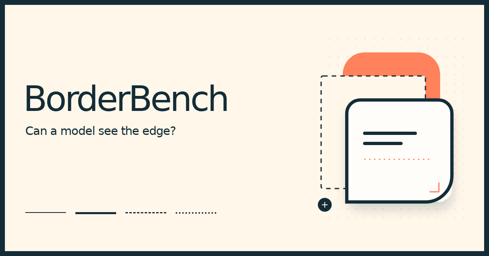

Can a model see the edge?
A visual benchmark for how language models perceive borders, corners, and shadows. Seven attributes, coarse Tailwind categories, and a fixed visual scale.

A visual benchmark for how language models perceive borders, corners, and shadows. Seven attributes, coarse Tailwind categories, and a fixed visual scale.
477 inputs · dataset 85a9c8d4d23a · protocol d22d04185da1 · gate passed
Shared cohort: 128 inputs measured by every configuration with observations. All comparison scores and breakdowns use this same cohort; unmeasured configurations remain unranked. Repeats keep the earliest final observation; total costs include every attempt. Per-model observed scores and confusion matrices are available in the structured export.
| Model | All seven correct | Border presence | Edge selectivity | Stroke style | Stroke width | Corner radius | Corner uniformity | Elevation |
|---|---|---|---|---|---|---|---|---|
| GPT-6 Astraopenai · 128/477 · 1 run(s) | 100.0% | 100.0% | 100.0% | 100.0% | 100.0% | 100.0% | 100.0% | 100.0% |
| GPT-5.6 Solopenai · 128/477 · 1 run(s) | 79.7% | 100.0% | 98.4% | 100.0% | 98.4% | 89.1% | 95.3% | 97.7% |
| GPT-5.6 Lunaopenai · 128/477 · 1 run(s) | 76.6% | 97.7% | 93.8% | 96.1% | 94.5% | 90.6% | 93.0% | 99.2% |
| Gemini 3.1 Pro Previewgoogle · 128/477 · 1 run(s) | 76.6% | 98.4% | 97.7% | 98.4% | 94.5% | 96.9% | 97.7% | 84.4% |
| GPT-5.6 Terraopenai · 128/477 · 1 run(s) | 70.3% | 99.2% | 98.4% | 97.7% | 93.8% | 87.5% | 89.8% | 97.7% |
| Muse Spark 1.2openai · 128/477 · 1 run(s) | 68.0% | 99.2% | 98.4% | 99.2% | 96.1% | 93.8% | 92.2% | 83.6% |
| Muse Spark 1.3openai · 128/477 · 1 run(s) | 53.9% | 100.0% | 99.2% | 100.0% | 80.5% | 97.7% | 100.0% | 68.8% |
| Gemini 3.8 Flashgoogle · 128/477 · 1 run(s) | 53.1% | 98.4% | 98.4% | 98.4% | 85.9% | 75.8% | 98.4% | 84.4% |
| Claude Fable 5.1anthropic · 128/477 · 1 run(s) | 51.6% | 98.4% | 98.4% | 98.4% | 93.0% | 93.0% | 97.7% | 60.9% |
| Claude Opus 5anthropic · 128/477 · 1 run(s) | 23.4% | 98.4% | 97.7% | 98.4% | 88.3% | 64.1% | 94.5% | 50.0% |
| Gemini 3.5 Flash-Litegoogle · 128/477 · 1 run(s) | 22.7% | 83.6% | 75.8% | 80.5% | 53.1% | 82.8% | 87.5% | 67.2% |
| Claude Haiku 4.5anthropic · 128/477 · 1 run(s) | 10.2% | 90.6% | 83.6% | 84.4% | 40.6% | 68.0% | 83.6% | 53.1% |
| Claude Sonnet 5anthropic · 128/477 · 1 run(s) | 7.8% | 94.5% | 85.9% | 94.5% | 44.5% | 62.5% | 85.9% | 43.8% |
Which card edges carry a stroke.
| Input groupAll seven correct | GPT-6 Astra | GPT-5.6 Sol | GPT-5.6 Luna | Gemini 3.1 Pro Preview | GPT-5.6 Terra | Muse Spark 1.2 | Muse Spark 1.3 | Gemini 3.8 Flash | Claude Fable 5.1 | Claude Opus 5 | Gemini 3.5 Flash-Lite | Claude Haiku 4.5 | Claude Sonnet 5 |
|---|---|---|---|---|---|---|---|---|---|---|---|---|---|
| all-4234 inputs | 100.0%n=56 | 87.5%n=56 | 85.7%n=56 | 80.4%n=56 | 85.7%n=56 | 64.3%n=56 | 37.5%n=56 | 60.7%n=56 | 50.0%n=56 | 23.2%n=56 | 26.8%n=56 | 10.7%n=56 | 5.4%n=56 |
| bottom-only54 inputs | 100.0%n=12 | 66.7%n=12 | 75.0%n=12 | 83.3%n=12 | 58.3%n=12 | 58.3%n=12 | 25.0%n=12 | 16.7%n=12 | 58.3%n=12 | 50.0%n=12 | 0.0%n=12 | 0.0%n=12 | 0.0%n=12 |
| left-only54 inputs | 100.0%n=20 | 75.0%n=20 | 65.0%n=20 | 60.0%n=20 | 45.0%n=20 | 50.0%n=20 | 60.0%n=20 | 45.0%n=20 | 40.0%n=20 | 15.0%n=20 | 10.0%n=20 | 15.0%n=20 | 15.0%n=20 |
| none81 inputs | 100.0%n=26 | 65.4%n=26 | 69.2%n=26 | 88.5%n=26 | 53.8%n=26 | 76.9%n=26 | 96.2%n=26 | 61.5%n=26 | 65.4%n=26 | 23.1%n=26 | 42.3%n=26 | 15.4%n=26 | 15.4%n=26 |
| top-only54 inputs | 100.0%n=14 | 92.9%n=14 | 71.4%n=14 | 57.1%n=14 | 85.7%n=14 | 100.0%n=14 | 57.1%n=14 | 50.0%n=14 | 42.9%n=14 | 14.3%n=14 | 7.1%n=14 | 0.0%n=14 | 0.0%n=14 |
Solid, dashed, dotted, or no stroke pattern.
| Input groupAll seven correct | GPT-6 Astra | GPT-5.6 Sol | GPT-5.6 Luna | Gemini 3.1 Pro Preview | GPT-5.6 Terra | Muse Spark 1.2 | Muse Spark 1.3 | Gemini 3.8 Flash | Claude Fable 5.1 | Claude Opus 5 | Gemini 3.5 Flash-Lite | Claude Haiku 4.5 | Claude Sonnet 5 |
|---|---|---|---|---|---|---|---|---|---|---|---|---|---|
| dashed126 inputs | 100.0%n=32 | 81.2%n=32 | 93.8%n=32 | 71.9%n=32 | 81.2%n=32 | 65.6%n=32 | 46.9%n=32 | 56.2%n=32 | 46.9%n=32 | 31.2%n=32 | 15.6%n=32 | 6.2%n=32 | 3.1%n=32 |
| dotted99 inputs | 100.0%n=28 | 75.0%n=28 | 64.3%n=28 | 75.0%n=28 | 71.4%n=28 | 60.7%n=28 | 46.4%n=28 | 28.6%n=28 | 64.3%n=28 | 25.0%n=28 | 10.7%n=28 | 3.6%n=28 | 3.6%n=28 |
| none81 inputs | 100.0%n=26 | 65.4%n=26 | 69.2%n=26 | 88.5%n=26 | 53.8%n=26 | 76.9%n=26 | 96.2%n=26 | 61.5%n=26 | 65.4%n=26 | 23.1%n=26 | 42.3%n=26 | 15.4%n=26 | 15.4%n=26 |
| solid171 inputs | 100.0%n=42 | 90.5%n=42 | 76.2%n=42 | 73.8%n=42 | 71.4%n=42 | 69.0%n=42 | 38.1%n=42 | 61.9%n=42 | 38.1%n=42 | 16.7%n=42 | 23.8%n=42 | 14.3%n=42 | 9.5%n=42 |
Hairline 1px through heavy 8px strokes.
| Input groupAll seven correct | GPT-6 Astra | GPT-5.6 Sol | GPT-5.6 Luna | Gemini 3.1 Pro Preview | GPT-5.6 Terra | Muse Spark 1.2 | Muse Spark 1.3 | Gemini 3.8 Flash | Claude Fable 5.1 | Claude Opus 5 | Gemini 3.5 Flash-Lite | Claude Haiku 4.5 | Claude Sonnet 5 |
|---|---|---|---|---|---|---|---|---|---|---|---|---|---|
| 0px81 inputs | 100.0%n=26 | 65.4%n=26 | 69.2%n=26 | 88.5%n=26 | 53.8%n=26 | 76.9%n=26 | 96.2%n=26 | 61.5%n=26 | 65.4%n=26 | 23.1%n=26 | 42.3%n=26 | 15.4%n=26 | 15.4%n=26 |
| 1px27 inputs | 100.0%n=7 | 85.7%n=7 | 85.7%n=7 | 100.0%n=7 | 100.0%n=7 | 42.9%n=7 | 14.3%n=7 | 71.4%n=7 | 28.6%n=7 | 14.3%n=7 | 0.0%n=7 | 42.9%n=7 | 14.3%n=7 |
| 2px180 inputs | 100.0%n=45 | 88.9%n=45 | 75.6%n=45 | 82.2%n=45 | 53.3%n=45 | 57.8%n=45 | 33.3%n=45 | 60.0%n=45 | 42.2%n=45 | 17.8%n=45 | 33.3%n=45 | 13.3%n=45 | 6.7%n=45 |
| 4px126 inputs | 100.0%n=33 | 75.8%n=33 | 87.9%n=33 | 63.6%n=33 | 87.9%n=33 | 81.8%n=33 | 60.6%n=33 | 39.4%n=33 | 57.6%n=33 | 33.3%n=33 | 6.1%n=33 | 0.0%n=33 | 3.0%n=33 |
| 8px63 inputs | 100.0%n=17 | 82.3%n=17 | 64.7%n=17 | 58.8%n=17 | 94.1%n=17 | 64.7%n=17 | 47.1%n=17 | 41.2%n=17 | 52.9%n=17 | 23.5%n=17 | 5.9%n=17 | 0.0%n=17 | 5.9%n=17 |
Sharp corners through full pill capsules.
| Input groupAll seven correct | GPT-6 Astra | GPT-5.6 Sol | GPT-5.6 Luna | Gemini 3.1 Pro Preview | GPT-5.6 Terra | Muse Spark 1.2 | Muse Spark 1.3 | Gemini 3.8 Flash | Claude Fable 5.1 | Claude Opus 5 | Gemini 3.5 Flash-Lite | Claude Haiku 4.5 | Claude Sonnet 5 |
|---|---|---|---|---|---|---|---|---|---|---|---|---|---|
| large90 inputs | 100.0%n=25 | 96.0%n=25 | 92.0%n=25 | 84.0%n=25 | 56.0%n=25 | 84.0%n=25 | 72.0%n=25 | 84.0%n=25 | 64.0%n=25 | 28.0%n=25 | 48.0%n=25 | 12.0%n=25 | 12.0%n=25 |
| medium234 inputs | 100.0%n=61 | 75.4%n=61 | 65.6%n=61 | 77.0%n=61 | 60.7%n=61 | 54.1%n=61 | 37.7%n=61 | 42.6%n=61 | 44.3%n=61 | 14.8%n=61 | 13.1%n=61 | 16.4%n=61 | 6.6%n=61 |
| pill54 inputs | 100.0%n=14 | 78.6%n=14 | 85.7%n=14 | 78.6%n=14 | 92.9%n=14 | 78.6%n=14 | 64.3%n=14 | 42.9%n=14 | 71.4%n=14 | 28.6%n=14 | 21.4%n=14 | 0.0%n=14 | 0.0%n=14 |
| sharp54 inputs | 100.0%n=15 | 60.0%n=15 | 73.3%n=15 | 60.0%n=15 | 93.3%n=15 | 86.7%n=15 | 60.0%n=15 | 73.3%n=15 | 40.0%n=15 | 60.0%n=15 | 26.7%n=15 | 0.0%n=15 | 20.0%n=15 |
| subtle45 inputs | 100.0%n=13 | 92.3%n=13 | 92.3%n=13 | 76.9%n=13 | 92.3%n=13 | 69.2%n=13 | 76.9%n=13 | 30.8%n=13 | 53.8%n=13 | 7.7%n=13 | 15.4%n=13 | 0.0%n=13 | 0.0%n=13 |
Equal, top-only, or asymmetric corner curvature.
| Input groupAll seven correct | GPT-6 Astra | GPT-5.6 Sol | GPT-5.6 Luna | Gemini 3.1 Pro Preview | GPT-5.6 Terra | Muse Spark 1.2 | Muse Spark 1.3 | Gemini 3.8 Flash | Claude Fable 5.1 | Claude Opus 5 | Gemini 3.5 Flash-Lite | Claude Haiku 4.5 | Claude Sonnet 5 |
|---|---|---|---|---|---|---|---|---|---|---|---|---|---|
| all-corners405 inputs | 100.0%n=107 | 82.2%n=107 | 80.4%n=107 | 75.7%n=107 | 78.5%n=107 | 70.1%n=107 | 50.5%n=107 | 51.4%n=107 | 50.5%n=107 | 25.2%n=107 | 22.4%n=107 | 12.2%n=107 | 8.4%n=107 |
| asymmetric36 inputs | 100.0%n=13 | 61.5%n=13 | 61.5%n=13 | 92.3%n=13 | 7.7%n=13 | 69.2%n=13 | 84.6%n=13 | 69.2%n=13 | 69.2%n=13 | 15.4%n=13 | 15.4%n=13 | 0.0%n=13 | 7.7%n=13 |
| top-only36 inputs | 100.0%n=8 | 75.0%n=8 | 50.0%n=8 | 62.5%n=8 | 62.5%n=8 | 37.5%n=8 | 50.0%n=8 | 50.0%n=8 | 37.5%n=8 | 12.5%n=8 | 37.5%n=8 | 0.0%n=8 | 0.0%n=8 |
Flat cards and two coarse Tailwind drop-shadow levels, independent of the border.
| Input groupAll seven correct | GPT-6 Astra | GPT-5.6 Sol | GPT-5.6 Luna | Gemini 3.1 Pro Preview | GPT-5.6 Terra | Muse Spark 1.2 | Muse Spark 1.3 | Gemini 3.8 Flash | Claude Fable 5.1 | Claude Opus 5 | Gemini 3.5 Flash-Lite | Claude Haiku 4.5 | Claude Sonnet 5 |
|---|---|---|---|---|---|---|---|---|---|---|---|---|---|
| floating-drop159 inputs | 100.0%n=44 | 79.5%n=44 | 77.3%n=44 | 86.4%n=44 | 70.5%n=44 | 56.8%n=44 | 45.5%n=44 | 63.6%n=44 | 45.5%n=44 | 4.5%n=44 | 6.8%n=44 | 15.9%n=44 | 4.5%n=44 |
| none159 inputs | 100.0%n=41 | 82.9%n=41 | 75.6%n=41 | 92.7%n=41 | 65.8%n=41 | 80.5%n=41 | 80.5%n=41 | 51.2%n=41 | 95.1%n=41 | 56.1%n=41 | 39.0%n=41 | 4.9%n=41 | 14.6%n=41 |
| subtle-drop159 inputs | 100.0%n=43 | 76.7%n=43 | 76.7%n=43 | 51.2%n=43 | 74.4%n=43 | 67.4%n=43 | 37.2%n=43 | 44.2%n=43 | 16.3%n=43 | 11.6%n=43 | 23.3%n=43 | 9.3%n=43 | 4.7%n=43 |